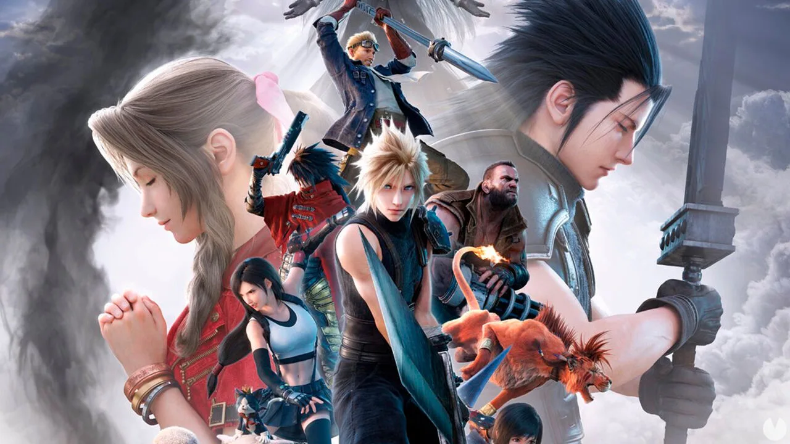

Luiso · 8 de septiembre de 2026
La trilogía formada por Final Fantasy VII Remake, Final Fantasy VII Rebirth y Final Fantasy VII Revelation está pensada para cerrar la historia principal de esta nueva interpretación del clásico de Square Enix. Sin embargo, la compañía no parece considerar que ese final vaya a significar el cierre definitivo del universo de Final Fantasy VII.
La cuestión surgió durante el panel "From Reunion to Resolve: Designing the FFVII Remake Trilogy", realizado en PAX West 2026, donde participaron el director de la trilogía, Naoki Hamaguchi, y el director de combate, Teruki Endo.
Durante la presentación, Hamaguchi explicó que uno de los objetivos de la trilogía nunca fue simplemente recrear el juego original de 1997. La intención era utilizar esta nueva versión para acercar Final Fantasy VII a una nueva generación de jugadores y mantener viva la franquicia durante las próximas décadas.
La idea resulta especialmente interesante porque Final Fantasy VII Revelation funcionará como conclusión de la historia principal de esta trilogía, pero Square Enix parece estar pensando más allá de ese punto.
No hay un nuevo juego anunciado.
Las declaraciones de Hamaguchi no confirman el desarrollo de una cuarta entrega ni de un nuevo remake. Lo que dejan claro es que Square Enix no pretende que la trilogía sea necesariamente el punto final de la franquicia.
De hecho, Final Fantasy VII ya posee un universo considerablemente más amplio que el juego original. A lo largo de los años, Square Enix creó diferentes proyectos vinculados a la saga, como Crisis Core, Dirge of Cerberus, Advent Children y Final Fantasy VII Ever Crisis.
La nueva trilogía también amplió considerablemente ese universo al incorporar nuevos misterios, personajes y elementos provenientes de diferentes partes de la llamada Compilation of Final Fantasy VII.
Según lo explicado durante el panel, esos cambios también tienen una finalidad a largo plazo: permitir que quienes ya conocen el juego original encuentren elementos nuevos y, al mismo tiempo, construir una experiencia capaz de atraer a quienes nunca jugaron Final Fantasy VII.
Aunque la puerta queda abierta para futuros proyectos, Square Enix mantiene una diferencia importante: la historia central de la trilogía tendrá una conclusión dentro de Final Fantasy VII Revelation.
La tercera entrega llegará el 8 de abril de 2027 y llevará a Cloud, Sephiroth y al resto de los personajes hacia la resolución de esta nueva interpretación de la historia.
Además, el contenido posterior que ya fue anunciado para Revelation apunta principalmente a historias centradas en personajes concretos, como Sephiroth, Vincent y los Turks, y no a continuar indefinidamente la trama principal.
Por eso, cuando Hamaguchi habla de un futuro para Final Fantasy VII, no necesariamente está hablando de continuar la historia de Cloud después de Revelation.
El futuro podría tomar otras formas.
La estrategia de Square Enix tiene sentido si se observa la evolución de la propiedad intelectual durante las últimas décadas.
Final Fantasy VII dejó de ser simplemente un RPG de PlayStation para convertirse en una de las principales franquicias transmedia de la compañía, con películas, juegos derivados, merchandising y múltiples reinterpretaciones de sus personajes.
Ahora la trilogía remake puede convertirse en otro punto de entrada para nuevos jugadores.
La intención de Square Enix parece ser precisamente esa: que Final Fantasy VII no quede asociado únicamente al juego de 1997, sino que pueda seguir transformándose para nuevas generaciones de jugadores.
Eso no significa que exista actualmente un Final Fantasy VII posterior a Revelation en desarrollo. Pero sí deja una puerta abierta para que, una vez terminada la trilogía, Square Enix vuelva a utilizar este universo si encuentra una idea que considere suficientemente atractiva.
Por ahora, el próximo paso está claro: cerrar la trilogía con Final Fantasy VII Revelation. Lo que ocurra después todavía está por escribirse.